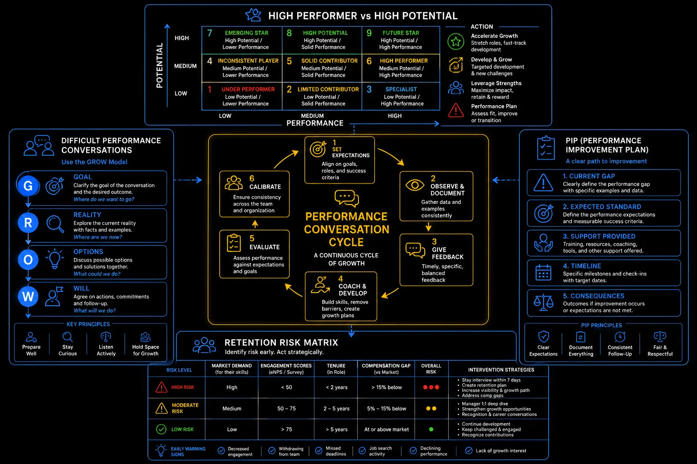

Pillar 7 · Cluster 3
Performance management that actually works
Coaching, managing underperformance, and calibrating ratings fairly are the hardest parts of people management. Getting them right determines team morale, retention, and output quality.
Topic 01 · Leadership Style
Coaching vs managing — the distinction
Managing tells people what to do. Coaching helps people figure out what to do. Both are necessary — the skill is knowing when to use each.
When to use
- New employees still learning the basics
- Crisis situations requiring immediate action
- Compliance-critical processes with zero tolerance for deviation
- Time-critical deliverables with no room for exploration
When to use
- Experienced team members who need guidance, not instruction
- Development conversations focused on growth and capability
- Problem-solving where the individual needs to build judgment
- Career discussions where the employee should own the direction
9-box grid — high performer vs high potential

Manager's performance management toolkit: 9-box grid, conversation cycle, GROW model, and retention risk matrix
Topic 02 · Underperformance
The PIP process — managing low performers
A Performance Improvement Plan is not a termination document. Done well, it is a structured path to either genuine recovery or a clear, documented decision.
Exhaust informal interventions first
Before a formal PIP, ensure the employee has received clear feedback, specific examples, and reasonable time to adjust. Document these conversations.
Define measurable improvement targets
Vague targets like "improve quality" are unfair and unenforceable. Specify exact metrics, thresholds, and the timeline for measurement.
Provide support resources
A PIP without support is a setup for failure. Offer training, mentoring, adjusted workload, or additional check-ins to give the employee a real chance to succeed.
Review at defined milestones
Weekly or bi-weekly reviews against PIP criteria. Document progress honestly — both improvements and continued gaps.
Make the decision transparently
At the end of the PIP period, the outcome should be clear to everyone — successful completion and exit from PIP, extension with modified targets, or separation.
PIP — current gap, expected standard, support, timeline, consequences
Topic 03 · Rating Fairness
Calibration sessions — ensuring fairness
Without calibration, ratings reflect manager generosity more than employee performance. Calibration forces managers to defend their ratings against a consistent standard.
- Managers present their proposed ratings for each team member to a peer group of managers at the same level
- Each rating must be supported by specific evidence — achievements, metrics, and behavioral examples
- The group challenges outliers — unusually high or low ratings require stronger justification
- Distribution guidance (not forced ranking) ensures that ratings reflect relative performance, not absolute grading
- HR runs to prevent dominant personalities from steering outcomes and to ensure consistent application of criteria
Calibration protects fairness, but it also rewards whoever advocates best. Come prepared.
- Calibration prevents rating inflation and ensures fairness across teams. It also creates political dynamics.
- Managers who advocate more effectively for their team members can secure better outcomes.
- The best protection for your team is documentation. Come to calibration with specific, quantified evidence that makes your case undeniable.
GROW model — goal, reality, options, will
- A PIP should never be a surprise. If someone lands on a performance improvement plan and did not see it coming, the manager failed — not the employee. Feedback should have been flowing for months before the formal process starts.
- The 9-box grid is a useful framework, but treat it as a conversation starter, not a verdict. People move boxes based on context, projects, and life circumstances. A "core player" in the wrong role might be a "star" in the right one. As a manager, your job is to find that fit.
- Coaching is the highest-leverage activity a manager can do — and the one most managers skip because it feels slow. One great coaching conversation that helps someone solve their own problem builds more capability than ten directive emails telling them what to do.
Reference
Glossary
Full glossary at the GBS Insider Club Field Guide.
- Harvard Business Review — The Performance Management Revolution, 2016
- McKinsey — Performance management that drives results, 2024
- CIPD — Managing Underperformance Guide, 2024
- Gallup — Strengths-based performance development, 2025
Knowing the frameworks is the entry ticket. Applying them — visibly, at your actual job — is what gets you promoted.
The GBS Insider Club Career Paths turn this theory into a guided 90-day program for your role: self-assessment, practical exercises, templates, and Julian's unfiltered practitioner playbook.
Explore the Career Paths → Back to Leadership and People